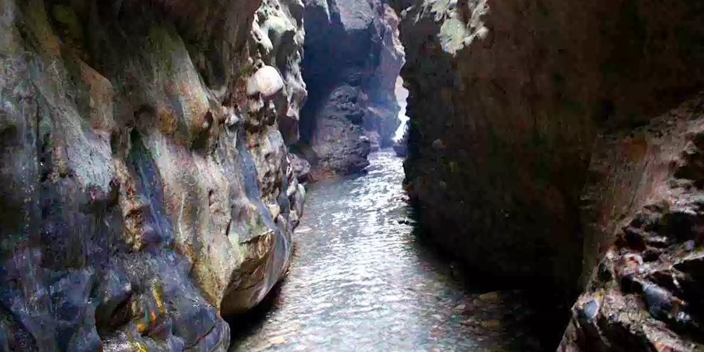

|  |
| Robber's Cave, locally known as Gucchu Pani, is a river cave formed in the Himalayas.
This river cave is believed to be an abode of Lord Shiva. Its speciality is that river water flows out from the middle of the cave. The cave has a highest fall of about 10 metres. In the central part there is a fort wall structure which is now broken. It consists of an extremely narrow gorge formed in a conglomerate limestone area on Doon Valley's Dehra plateau. |